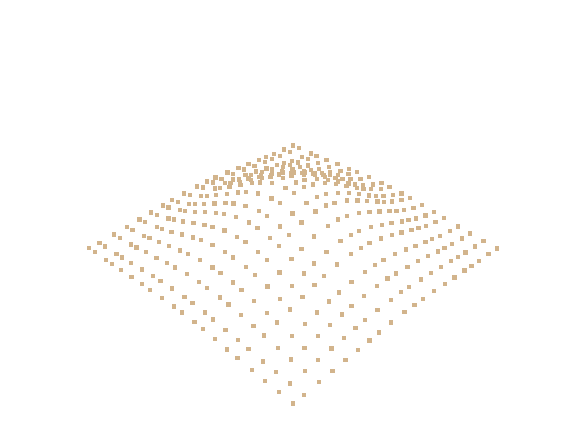
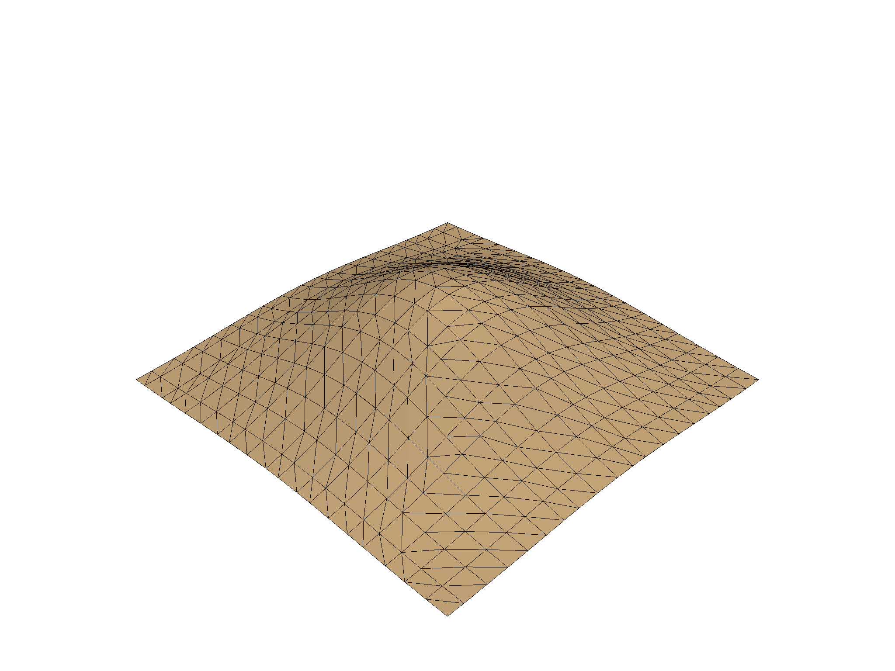
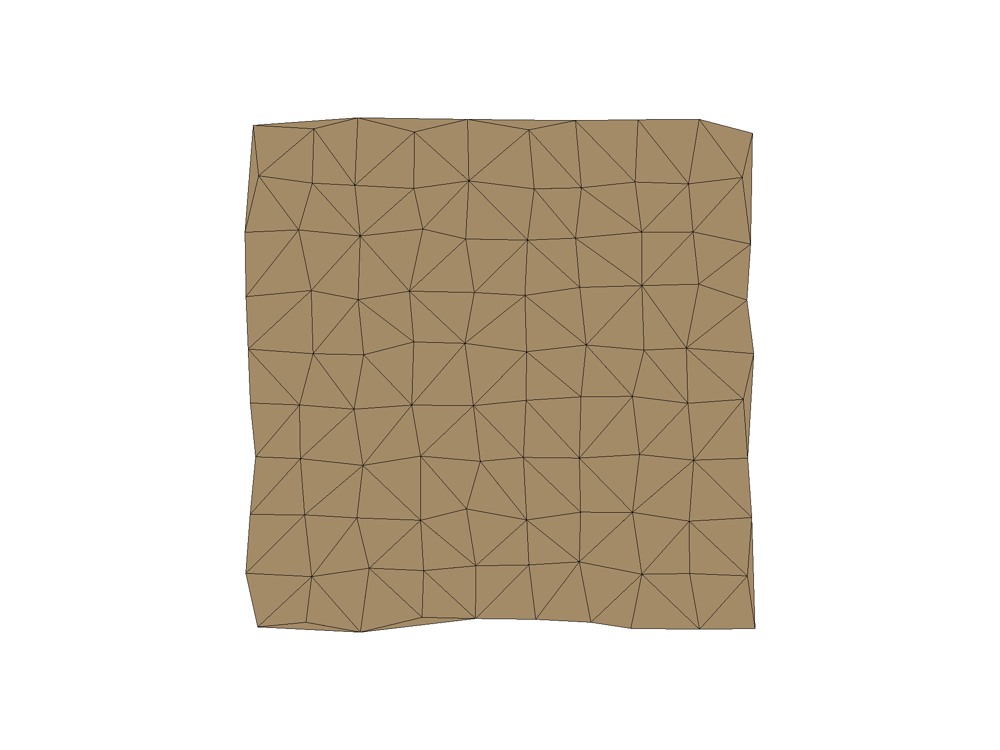
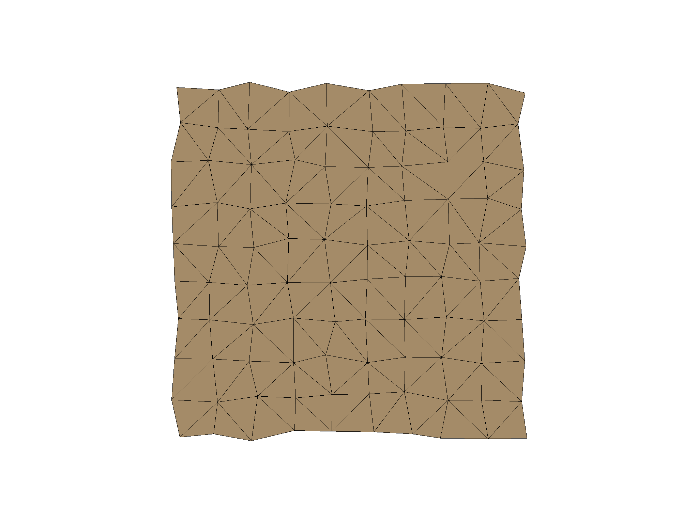
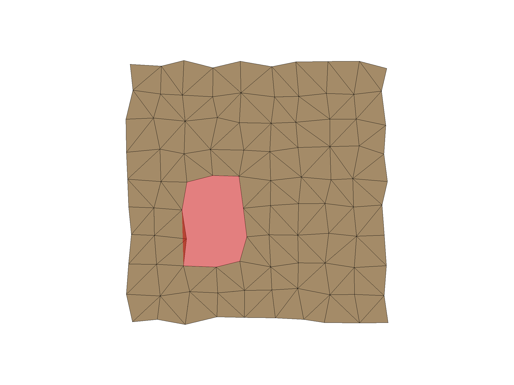

Note
Click here to download the full example code
Create Triangulated Surface¶
Create a surface from a set of points through a Delaunay triangulation.
# sphinx_gallery_thumbnail_number = 2
import pyvista as pv
import numpy as np
Simple Traingulations¶
First, create some points for the surface.
# Define a simple Gaussian surface
n = 20
x = np.linspace(-200, 200, num=n) + np.random.uniform(-5, 5, size=n)
y = np.linspace(-200, 200, num=n) + np.random.uniform(-5, 5, size=n)
xx, yy = np.meshgrid(x, y)
A, b = 100, 100
zz = A * np.exp(-0.5 * ((xx / b) ** 2.0 + (yy / b) ** 2.0))
# Get the points as a 2D NumPy array (N by 3)
points = np.c_[xx.reshape(-1), yy.reshape(-1), zz.reshape(-1)]
points[0:5, :]
Out:
array([[-196.99817714, -195.43859275, 2.12749221],
[-176.84722147, -195.43859275, 3.10064769],
[-153.7281218 , -195.43859275, 4.54369809],
[-135.76396787, -195.43859275, 5.89300032],
[-120.29195491, -195.43859275, 7.18395659]])
Now use those points to create a point cloud PyVista data object. This will
be encompassed in a pyvista.PolyData object.
# simply pass the numpy points to the PolyData constructor
cloud = pv.PolyData(points)
cloud.plot(point_size=15)

Out:
[(637.4127640563397, 638.9356696208696, 686.511651780597),
(1.5809425646396562, 3.1038481291695774, 50.67983028889707),
(0.0, 0.0, 1.0)]
Now that we have a PyVista data structure of the points, we can perform a triangulation to turn those boring discrete points into a connected surface.
surf = cloud.delaunay_2d()
surf.plot(show_edges=True)

Out:
[(637.4127640563397, 638.9356696208696, 686.511651780597),
(1.5809425646396562, 3.1038481291695774, 50.67983028889707),
(0.0, 0.0, 1.0)]
Masked Triangulations¶
x = np.arange(10, dtype=float)
xx, yy, zz = np.meshgrid(x, x, [0])
points = np.column_stack((xx.ravel(order="F"),
yy.ravel(order="F"),
zz.ravel(order="F")))
# Perturb the points
points[:, 0] += np.random.rand(len(points)) * 0.3
points[:, 1] += np.random.rand(len(points)) * 0.3
# Create the point cloud mesh to triangulate from the coordinates
cloud = pv.PolyData(points)
cloud
| PolyData | Information |
|---|---|
| N Cells | 100 |
| N Points | 100 |
| X Bounds | 3.474e-02, 9.246e+00 |
| Y Bounds | 6.484e-03, 9.297e+00 |
| Z Bounds | 0.000e+00, 0.000e+00 |
| N Arrays | 0 |
Run the triangulation on these points
surf = cloud.delaunay_2d()
surf.plot(cpos="xy", show_edges=True)

Out:
[(4.640519859429922, 4.651561109549632, 25.274030757071277),
(4.640519859429922, 4.651561109549632, 0.0),
(0.0, 1.0, 0.0)]
Note that some of the outer edges are unconstrained and the triangulation
added unwanted triangles. We cn mitigate that with the alpha parameter.
surf = cloud.delaunay_2d(alpha=1.0)
surf.plot(cpos="xy", show_edges=True)

Out:
[(4.640519859429922, 4.651561109549632, 25.274030757071277),
(4.640519859429922, 4.651561109549632, 0.0),
(0.0, 1.0, 0.0)]
We could also add a polygon to ignore during the triangulation via the
edge_source parameter.
# Define a polygonal hole with a clockwise polygon
ids = [22, 23, 24, 25, 35, 45, 44, 43, 42, 32]
# Create a polydata to store the boundary
polygon = pv.PolyData()
# Make sure it has the same points as the mesh being triangulated
polygon.points = points
# But only has faces in regions to ignore
polygon.faces = np.array([len(ids),] + ids)
surf = cloud.delaunay_2d(alpha=1.0, edge_source=polygon)
p = pv.Plotter()
p.add_mesh(surf, show_edges=True)
p.add_mesh(polygon, color="red", opacity=0.5)
p.show(cpos="xy")

Out:
[(4.640519859429922, 4.651561109549632, 25.274030757071277),
(4.640519859429922, 4.651561109549632, 0.0),
(0.0, 1.0, 0.0)]
Total running time of the script: ( 0 minutes 8.252 seconds)